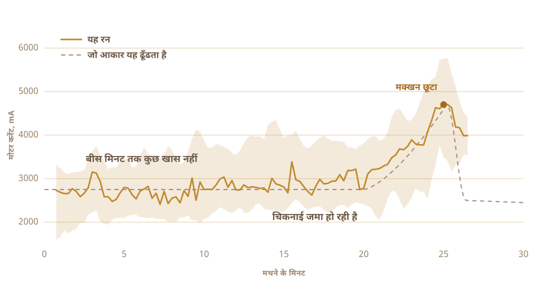

01
खाया ही था, बनाया कभी नहीं
जो घी मैं जानता हूँ वह गाँव से आता था। किसी और चीज़ के पुराने जार में भरकर, उन लोगों के हाथ से जो इतने बरसों से उसे एक ही तरीके से बनाते आए हैं कि वहाँ कोई इसे हुनर मानता ही नहीं।
दुकान के डिब्बे जैसा स्वाद नहीं होता।
और मैंने एक बार भी नहीं बनाया था। दूध कितनी देर छोड़ना है, दही कितना ठंडा चाहिए, पकते हुए बर्तन की आवाज़ कैसी होनी चाहिए, कुछ पता नहीं था।
02
शुरुआत दही से होती है, सीधे मलाई से नहीं
कारखाने का ज़्यादातर घी मलाई से शुरू होता है। परंपरागत तरीका एक दिन, कभी दो दिन पहले से शुरू होता है। मलाई, यानी असल में उबालकर गाढ़ा किया गया पूरा दूध, उसका दही जमाया जाता है और रातभर खट्टा होने के लिए छोड़ दिया जाता है।
वह खट्टापन ही सबसे ज़रूरी चीज़ है। उसे छोड़ दिया तो हाथ में सिर्फ़ पिघलाकर छाना हुआ मक्खन आता है। स्वाद अच्छा होता है, पर वह घी नहीं है।

03
दो दिन बाहर ही
गुनगुना दूध, उसमें कल के दही का एक चम्मच, अच्छी तरह घोलकर रातभर के लिए छोड़ दिया। बाकी काम बैक्टीरिया कर देते हैं। मैंने अपना दो दिन बाहर ही रखा।
यही किण्वन है, और कारखाने वाला घी इसी कदम को छोड़ देता है। ज़िंदा कल्चर, ज़्यादातर लैक्टोबैसिलस, दूध की लैक्टोज़ खाते जाते हैं और उसे लैक्टिक एसिड में बदल देते हैं। दूध गाढ़ा होता है। खट्टा होता है। सुबह तक वह कुछ और बन चुका होता है।
जो भी अच्छा है वह यहीं से आता है। लैक्टोज़ टूट जाती है, इसलिए पचाना आसान पड़ता है। चिकनाई और प्रोटीन शरीर के लिए आसान हो जाते हैं। ब्यूटिरिक एसिड भी है। आँत की भीतरी परत असल में इसी पर चलती है, और सीधे मलाई से बने घी के मुकाबले इस तरह बने घी में यह ज़्यादा होता है।
आयुर्वेद बहुत पहले से ठीक यही घी बताता आया है।
मैं इतना कह सकता हूँ कि महक दही से आती है। और इतनी मेहनत करने की बड़ी वजह वही महक है।

04
इस तरीके का एक नाम है
बिलोना। बर्तन में दही, उसमें लकड़ी की मथनी, और फिर इधर से उधर घुमाते रहना, जब तक मक्खन हार न मान ले और ऊपर आ जाए।
मथनी मैंने खुद बनाई। ऑनलाइन जो मिलीं उनमें गोंद लगा था, और कोई बताता नहीं था कि गोंद कौन सा है। वह चीज़ आधे घंटे खाने में डूबी रहती है, तो अंदाज़े पर चलने की बात नहीं थी। सख़्त लकड़ी, स्टेनलेस स्टील के पेच, और दराज़ में पहले से पड़े एक स्टिरर के डंडे पर कसी हुई।
चार पंख, और उन्हें सीधा रखने के लिए स्टील की एक पट्टी। सब पेच से कसा है, इसलिए दोबारा खुल भी जाता है।


करीब आधा घंटा लगता है, और उसमें से ज़्यादातर समय कुछ नहीं होता। ऐसे ही काम के बीच आदमी सोचता है कि यह कोई और कर देता तो अच्छा था।

05
तो मैंने पूछा
जो लोग यह काम सच में जानते हैं वे किसी रेसिपी से नहीं बनाते, और उनमें से कोई मेरी रसोई में नहीं था। तो सवाल एक चैट विंडो में चले गए।
दही कितनी देर जमाना है। कितना ठंडा रखना है। रगड़ से बर्तन गरम होकर मक्खन बिगड़ने से पहले कितनी तेज़ घुमा सकते हैं। हर जवाब तीन नए सवाल खोल देता था।
फिर मैंने वह सवाल पूछा जो असल में पूछना चाहता था। तुम ही बना दोगे?
सवाल अब यह नहीं था कि घी कैसे बनाऊँ। सवाल यह हो गया कि तुम मेरे लिए बना दोगे।
06
द बीस्ट
एक कॉर्डलेस ड्रिल। दराज़ और हार्डवेयर की दुकान से जुटी मथनी। इलेक्ट्रॉनिक्स के लिए प्लास्टिक का एक खाने का डिब्बा, रीढ़ के लिए लकड़ी का चॉपिंग बोर्ड, और एक बड़ा पीला स्टॉप बटन, क्योंकि जिस चीज़ में मोटर है उसमें यह होना चाहिए।
खर्च लगभग कुछ नहीं हुआ, और देखने में भी वैसा ही लगता है। बात भी वही है।

- मोटरकॉर्डलेस ड्रिल, क्लैंप में कसी
- मथनीसख़्त लकड़ी और स्टेनलेस स्टील, खरीदी नहीं बनाई
- दिमागरास्पबेरी पाई, हर सेकंड लिखता हुआ
- इंद्रियमथते वक़्त मोटर का करेंट, पकाते वक़्त तापमान की प्रोब
- रोकएक बड़ा बटन, सीधे बिजली काटने के लिए जुड़ा
07
घुमाना तो आसान है
दही घुमाना कोई भी कर सकता है। मुश्किल यह जानना है कि कब रुकना है।
जल्दी रोका तो गाढ़ा झाग ही हाथ आएगा। ज़्यादा देर घुमाया तो मक्खन फिर छाछ में घुल जाएगा और खो जाएगा। वह सही पल चिकनाई और तापमान के हिसाब से सरकता रहता है, और दिन कैसा जा रहा है उससे भी।
इसे कोई घड़ी देखकर नहीं करता। सुनकर पकड़ते हैं। अंदर की आवाज़ एक जैसी घुमाई से बदलकर बेढंगी थपकी बन जाती है, और हाथ डालने का वक़्त वही है।

08
एक ही इंद्रिय, और बस वही
तो मैंने इसे एक ही इंद्रिय दी। मोटर कितना ज़ोर लगा रही है, बस यही देखती है।
बीस मिनट तक कुछ नहीं। लोड 2700 mA के आसपास थोड़ा ऊपर नीचे होता रहता है। फिर चिकनाई जमा होने लगती है और ड्रिल को किसी गाढ़े में से होकर जाना पड़ता है। लोड 4700 तक चढ़ता है, एक पल वहीं टिकता है, और फिर मक्खन पानी छोड़ देता है और लोड गिर जाता है।
कैमरा नहीं, मॉडल नहीं, कोई चतुराई नहीं। एक नंबर है, जो चढ़ता है और फिर गिरता है।

09
यह खुद रुक गई
चली। मैं दूसरे काम में लग गया, और लौटा तो यह खुद बंद हो चुकी थी।
धुँधली छाछ में हल्के पीले मक्खन के लोंदे। समय किसी ने नहीं बताया था। जो एक चीज़ यह महसूस कर सकती थी, उसी से खुद निकाल लिया।

10
फिर हाथ का काम
लोंदे इकट्ठे करके एक गोला बना लेना। ठंडे पानी में धोना, बार बार, जब तक पानी धुँधला आना बंद न हो जाए।
छाछ की जो एक बूँद भी रह जाएगी वह अगले कदम में जल जाएगी। यह हिस्सा मैंने मशीन को नहीं दिया, और देने का मन भी नहीं था।


11
दूसरी इंद्रिय
मोटर के लोड ने रिग को बता दिया कि कब रुकना है। पकाना अलग समस्या है, क्योंकि अब कोई पल ढूँढना नहीं है, एक हालत टिकाए रखनी है।
तो बर्तन हॉटप्लेट पर जाता है, उसमें तापमान की प्रोब रहती है, और एक एसी रेगुलेटर प्लेट को चालू बंद करता रहता है ताकि नंबर वहीं रहे जहाँ आपने रखा है। मैंने 250 F पर रखा, करीब 121 °C, और वह लगभग एक घंटा वहीं टिका रहा।
एक घंटा बर्तन ताकता आदमी भटक जाएगा। रेगुलेटर को ऊब नहीं होती।

12
एक घंटा रंग देखते हुए
बर्तन में मक्खन, और उसके बाद ज़्यादातर अपने आप चलता रहता है।
पिघलता है। सफ़ेद झाग उठता है और आवाज़ तेज़ हो जाती है। पानी सूखता जाता है और आवाज़ मरती जाती है। दूध के कण नीचे बैठकर भूरे हो जाते हैं, और महक मक्खन से बदलकर कुछ भुने जैसी हो जाती है। जब बर्तन चुप हो जाए और घोल साफ़ दिखने लगे, तब बन गया।
फिर भी मैं ज़्यादातर देखता ही रहा, क्योंकि देखने में अच्छा लगता है। लेकिन मेरे किए किसी काम से नतीजा नहीं बदला।


13
घी
साफ़, सुनहरा, और महक ठीक उन जारों जैसी जिनसे बचपन से खाता आया हूँ। मेरे पास एक ही इम्तिहान था, और यह उसमें पास हो गया।

गरम और साफ़ ही जारों में भरा। अगले दिन तक हल्के रंग का और दानेदार होकर जम चुका था।
फिर उन पर लेबल लगाया। उस पर जो शब्द है वह घी के लिए नेपाली है, और बगल का कोड आपको इसी पन्ने पर लौटा लाता है।

ज़िंदगी का पहला बैच। सच कहूँ तो बनाया मैंने नहीं।
14
दूसरी बार नौ जार
पहले रन में दो जार निकले थे, बस इतना। इस बार रेलिंग भर गई।
नौ जार। कैमरे के सबसे पास दो लंबे, ढक्कन घुमाने वाले। बीच में छह क्लिप वाले। और परले खंभे के पास एक छोटा।

लेबल अब अलग है। पहले दो जारों पर गुलाबी कागज़ का लेबल था, ऊपर OUR STORY छपा हुआ। ये साफ़ फ़िल्म के हैं, इसलिए अक्षरों के पीछे से घी दिखता है, और बगल का कोड अब भी इसी पन्ने पर ले आता है।


पहली बार जैसे ही हल्के पीले रंग में जमा। मुझे पक्का भरोसा नहीं था कि ऐसा होगा।
15
अब आगे क्या चाहिए
अभी मशीन को दो चीज़ें पता हैं। मथना कब रोकना है, और कौन सा तापमान टिकाए रखना है।
आगे इसे आँखें और कान देना चाहता हूँ। एक कैमरा, ताकि झाग बैठते और कण भूरे होते यह खुद देखे, और मेरे दिए नंबर को पकड़े रहने की जगह आँच खुद चुने। और एक माइक्रोफ़ोन, क्योंकि घी तैयार है यह बताने वाली बहुत सी बात बर्तन के चुप हो जाने में ही होती है।
ड्रिल एक दूसरी पारी भी सँभाल सकती है। मक्खन बर्तन में पहुँचने के बाद उसे चलाते रहना पड़ता है, और वहीं एक मोटर बिना काम बैठी है।
फिर लूप। दही जमाने का समय बदलो, रफ़्तार बदलो, जो निकले उसे चखो, जो काम आया उसे रखो, फिर से शुरू करो। तीस रन के बाद यह कहीं ऐसी जगह पहुँच जाती जहाँ देखने का खयाल मुझे आता ही नहीं।
मुझे तो कहाँ देखना है यही सच में पता नहीं था।
किस चीज़ से बनी है, सेंसिंग कहाँ होती है, और रिग असल में क्या देखता रहता है।